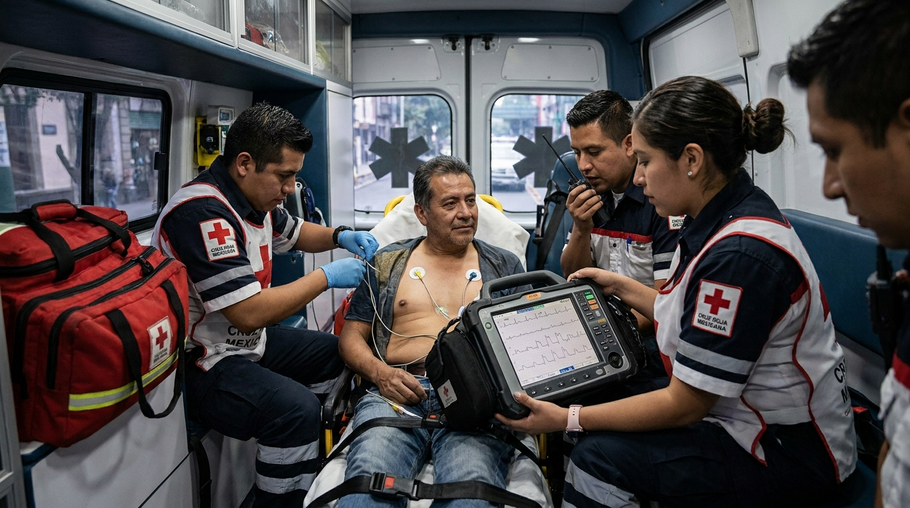

El Síndrome Coronario Agudo (SCA) es una de las urgencias cardiovasculares con mayor impacto en mortalidad y morbilidad a nivel mundial. En el entorno prehospitalario, donde cada minuto cuenta, la capacidad del equipo de emergencias para reconocerlo, stratificarlo y actuar correctamente marca la diferencia entre un resultado favorable y uno devastador.
El SCA engloba un grupo de condiciones clínicas caracterizadas por una isquemia miocárdica aguda secundaria a una reducción súbita del flujo sanguíneo coronario. En su fisiopatología más frecuente, una placa de aterosclerosis se fractura o erosiona, generando la formación de un trombo que obstruye de forma parcial o total la arteria coronaria afectada.
Dependiendo del grado de obstrucción y del tiempo de evolución, el espectro clínico del SCA se divide en tres entidades con implicaciones terapéuticas distintas:
Si bien el dolor torácico subesternal de características presivas es el síntoma cardinal del SCA, hasta un 30% de los pacientes —especialmente mujeres, diabéticos y adultos mayores— pueden presentar tableaux atípicos que dificultan el reconocimiento temprano. Las manifestaciones que deben alertar al equipo prehospitalario incluyen:
La guía de la Sociedad Polaca de Cardiología y la Asociación de Medicina de Emergencias de 2021 recalca que el desencadenante principal de toda la cascada diagnóstica y terapéutica en pacientes con sospecha de SCA es la presencia de molestia torácica aguda, caracterizada como dolor, presión, opresión o ardor. Sin embargo, la ausencia de dolor torácico no excluye el diagnóstico.
El electrocardiograma de 12 derivaciones es la herramienta diagnóstica de primera línea en la evaluación prehospitalaria del SCA. Las guías de la Sociedad Europea de Cardiología (ESC 2020) y las recomendaciones de la Association for Acute Cardiovascular Care (ACVC) coinciden en que debe obtenerse within 10 minutes of first medical contact en cualquier paciente con sospecha de SCA.
Su importancia radica en que:
La telecardiología —transmisión del ECG y datos clínicos al centro de destino— es una herramienta validada que permite coordinar la activación temprana del equipo de hemodinámica, reduciendo significativamente los tiempos de puerta-aguja o puerta-balón.
Según las recomendaciones actualizadas, la derivación diagnóstica de STEMI requiere elevación del ST ≥1 mm en dos derivaciones contiguas en pacientes con síntomas sugestivos. En V2-V3, el punto de corte es ≥2 mm en hombres ≥40 años, o ≥2.5 mm en hombres <40 años, o ≥1.5 mm en mujeres.
La terapia antiagregante dual —ácido acetilsalicílico (AAS) más un inhibidor del receptor P2Y12— es el estándar de atención en todos los pacientes con SCA, según las guías ESC 2020 y las recomendaciones de expertos de 2021.
En STEMI, la guía ESC 2020 recomienda administrar el inhibidor P2Y12 tan pronto como se confirme el diagnóstico por ECG, idealmente en la fase prehospitalaria, para obtener una inhibición plaquetaria efectiva al momento de la intervención coronaria percutánea.
La anticoagulación con heparina (no fraccionada o de bajo peso molecular) debe administrarse en todos los pacientes con SCA que sean candidatos a estrategia invasiva urgente. La elección entre heparina no fraccionada (HNF) o enoxaparina depende de los protocolos institucionales y del contexto clínico.
La administración rutinaria de oxígeno en pacientes con saturación normal no está recomendada. Según las guías ESC 2020 y los protocolos de la American Heart Association, se debe administrar oxígeno solo cuando la saturación de oxígeno periférico (SpO₂) sea <90% o el paciente presente signos de hipoxia. La hiperoxia puede ser perjudicial en pacientes con infarto agudo de miocardio no complicado.
El dolor torácico persistente o refractario en el SCA debe tratarse por dos razones: por su impacto en el bienestar del paciente y porque el dolor activa el sistema nervioso simpático, aumentando la demanda miocárdica de oxígeno. Los opioides intravenosos —fundamentalmente morfina— siguen siendo el analgésico de elección en el entorno prehospitalario para el SCA con dolor severo refractario a nitratos, según las recomendaciones de la ESC (Clase IIa, nivel de evidencia C).
Las guías más recientes han posicionado a los nitratos sublinguales o intravenosos como primera línea para el alivio sintomático, reservando los opioides para dolor severo persistente. La nitroglicerina también tiene un rol en el manejo de la isquemia y la precarga, pero debe usarse con precaución en pacientes con hipotensión o infarto de ventrículo derecho.
El monitoreo electrocardiográfico continuo debe aplicarse inmediatamente a todo paciente con diagnóstico preliminar de SCA para la detección temprana de arritmias potencialmente letales y la posibilidad de desfibrilación oportuna si estuviera indicada.
En el NSTEMI y la angina inestable, la estratificación del riesgo es fundamental para determinar la urgencia y el tipo de estrategia de revascularización. Las escalas más utilizadas en la práctica clínica incluyen las escalas TIMI y GRACE, que integran variables clínicas, electrocardiográficas y de laboratorio para clasificar a los pacientes en categorías de riesgo bajo, intermedio o alto.
Para el ámbito prehospitalario, la estratificación rápida es importante porque determina:
Uno de los conceptos más críticos en el manejo del SCA es el tiempo total de isquemia: el período desde el inicio de los síntomas hasta la restauración del flujo coronario. Cada minuto de retraso implica más tejido miocárdico en riesgo de necrosis irreversible.
Las recomendaciones clave para la logística de derivación son:
Todos los pacientes con SCA, independientemente del subtipo y de los cambios electrocardiográficos en el momento del diagnóstico, deben ser derivados a centros con cardiología intervencionista y capacidad de hemodinámica. Los protocolos de teleconsulta prehospitalaria permiten activar al equipo de hemodinámica antes de la llegada del paciente, reduciendo los tiempos muertos intrahospitalarios.
1. Sospecha clínica: ante todo paciente con molestia torácica aguda o síntomas sugestivos, piensa en SCA —incluso sin dolor torácico en grupos de riesgo.
2. ECG en ≤10 minutos: obtén, interpreta y —si es posible— transmite el ECG de 12 derivaciones en los primeros 10 minutos tras el primer contacto médico.
3. Antiagregación dual temprana: AAS + P2Y12 (prasugrel o ticagrelor) lo antes posible en el primer contacto médico.
4. Oxígeno solo si SpO₂ <90%: no suplementar rutinariamente.
5. Anticoagulación: heparina según protocolo institucional.
6. Alivio del dolor: nitratos sublinguales o iv para isquemia persistente; morfina iv para dolor refractario severo.
7. Monitoreo y准备 para arritmias: cardioversor-desfibrilador listo desde el inicio.
8. Teleconsulta y activación temprana: transmite ECG y datos clínicos al centro receptor para anticipar la activación del equipo de hemodinámica.
9. Derivar al centro correcto: ICP primaria = centro con hemodinámica. Todo SCA va a centro con capacidad intervencionista.
El SCA es una urgencia tiempo-dependiente donde la actuación del equipo prehospitalario tiene un impacto directo y medible en la supervivencia y la calidad de vida posterior del paciente. El reconocimiento temprano, la obtención rápida del ECG, la antiagregación plaquetaria dual inmediata, la anticoagulación, el alivio del dolor y la derivación al centro correcto con hemodinámica disponible son los pilares del manejo prehospitalario del SCA.
La formación continua y la simulación clínica son herramientas esenciales para que los equipos de emergencias mantengan y refuercen estas competencias. En Asesores en Emergencias trabajamos con instituciones y equipos de salud para asegurar que cada eslabón de la cadena de supervivencia esté listo para actuar con precisión cuando el momento lo exige.
¿Quieres que tu equipo esté preparado para el manejo del SCA?
Ofrecemos cursos de Soporte Básico y Avanzado Cardiovascular (BLS/ACLS) con simulación clínica práctica. Escríbenos a jperez@emergencias.com.mx o visita www2.emergencias.com.mx.